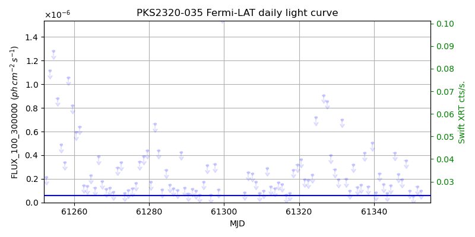
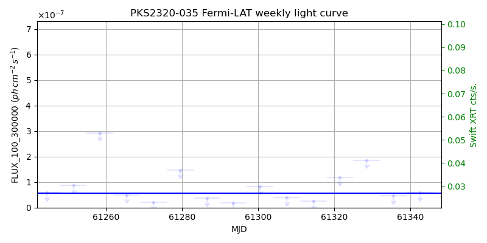
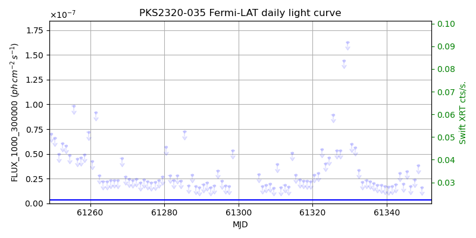
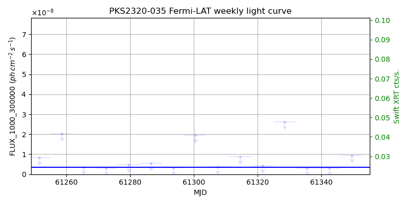

LAT Lightcurve site: https://fermi.gsfc.nasa.gov/ssc/data/access/lat/msl_lc/source/PKS_2320-035
Swift site: https://www.swift.psu.edu/monitoring/source.php?source=PKS2320-035
NED: Query
Time of last update of this page: UT: 2026-11-06 16:30 (MJD: 61350.688)
| Property | Value |
|---|---|
| R.A. | 23:23:31.92 |
| Dec. | -3:17:06.0 |
| z | 1.411 |
| 3FGL SpectrumType | LogParabola |
| 3FGL PL Index | |
| 3FGL Flux_100_300000 | 5.67e-08 1 / (s cm2) |
| 3FGL Flux_1000_300000 | 3.56e-09 1 / (s cm2) |
| 3FGL Flux >200 GeV | 9.86e-13 1 / (s cm2) |
| 3FGL Extrap. Crab >200 GeV | 0.00 |
| 3FGL Flux After EBL Absorption >200GeV | 3.26e-15 1 / (s cm2) |
| 3FGL EBL Crab Fraction >200GeV | 0.00 |

| MJD | dMJD | Flux | dFlux | Frac3FGL | FracCrab>200GeV | EBLFracCrab>200GeV |
|---|---|---|---|---|---|---|
| 61345.50 | 0.50 | 4.21e-07 | 0.00e+00 | 0.00 | 0.00 | 0.00 |
| 61346.50 | 0.50 | 2.38e-07 | 0.00e+00 | 0.00 | 0.00 | 0.00 |
| 61347.50 | 0.50 | 1.92e-07 | 0.00e+00 | 0.00 | 0.00 | 0.00 |
| 61348.50 | 0.50 | 3.56e-07 | 0.00e+00 | 0.00 | 0.00 | 0.00 |
| 61349.50 | 0.50 | 1.01e-07 | 0.00e+00 | 0.00 | 0.00 | 0.00 |

| MJD | dMJD | Flux | dFlux | Frac3FGL | FracCrab>200GeV | EBLFracCrab>200GeV |
|---|---|---|---|---|---|---|
| 61314.50 | 3.50 | 2.55e-08 | 0.00e+00 | 0.00 | 0.00 | 0.00 |
| 61321.50 | 3.50 | 1.18e-07 | 0.00e+00 | 0.00 | 0.00 | 0.00 |
| 61328.50 | 3.50 | 1.85e-07 | 0.00e+00 | 0.00 | 0.00 | 0.00 |
| 61335.50 | 3.50 | 4.71e-08 | 0.00e+00 | 0.00 | 0.00 | 0.00 |
| 61342.50 | 3.50 | 5.85e-08 | 0.00e+00 | 0.00 | 0.00 | 0.00 |

| MJD | dMJD | Flux | dFlux | Frac3FGL | FracCrab>200GeV | EBLFracCrab>200GeV |
|---|---|---|---|---|---|---|
| 61345.50 | 0.50 | 3.25e-08 | 0.00e+00 | 0.00 | 0.00 | 0.00 |
| 61346.50 | 0.50 | 1.72e-08 | 0.00e+00 | 0.00 | 0.00 | 0.00 |
| 61347.50 | 0.50 | 2.42e-08 | 0.00e+00 | 0.00 | 0.00 | 0.00 |
| 61348.50 | 0.50 | 3.84e-08 | 0.00e+00 | 0.00 | 0.00 | 0.00 |
| 61349.50 | 0.50 | 1.63e-08 | 0.00e+00 | 0.00 | 0.00 | 0.00 |

| MJD | dMJD | Flux | dFlux | Frac3FGL | FracCrab>200GeV | EBLFracCrab>200GeV |
|---|---|---|---|---|---|---|
| 61314.50 | 3.50 | 8.86e-09 | 0.00e+00 | 0.00 | 0.00 | 0.00 |
| 61321.50 | 3.50 | 4.39e-09 | 0.00e+00 | 0.00 | 0.00 | 0.00 |
| 61328.50 | 3.50 | 2.61e-08 | 0.00e+00 | 0.00 | 0.00 | 0.00 |
| 61335.50 | 3.50 | 3.04e-09 | 0.00e+00 | 0.00 | 0.00 | 0.00 |
| 61342.50 | 3.50 | 3.10e-09 | 0.00e+00 | 0.00 | 0.00 | 0.00 |
--------------------------------------------------------- Using user-supplied coords: 23:23:31.92 -3:17:06.0 2000 --------------------------------------------------------- FLWO UT night of: 2026-11-07 Local Sid. @ Midnight: 02:42 Sunset (-15.0) (local, UT): 18:39 01:39 Sunrise (-15.0) (local, UT): 05:36 12:36 Moonrise (local, UT): 05:16 12:16 Moonset (local, UT): Moon phase: 0.04 --------------------------------------------------------- AzTime LSID UT Obj_el Obj_az Mn_el Mn_az Sep. --------------------------------------------------------- 18:39 21:20 01:39 44.3 133.8 -35.5 278.9 152.1 19:09 21:50 02:09 48.6 142.8 -41.6 283.5 151.7 19:39 22:20 02:39 52.0 153.3 -47.5 288.8 151.4 20:09 22:50 03:09 54.3 165.2 -53.3 295.3 151.1 20:39 23:20 03:39 55.2 178.1 -58.7 303.4 150.8 21:09 23:50 04:09 54.7 191.2 -63.5 313.9 150.4 21:39 00:20 04:39 52.8 203.4 -67.5 328.0 150.1 22:09 00:50 05:09 49.7 214.4 -70.0 346.2 149.7 22:39 01:20 05:39 45.6 223.8 -70.5 6.9 149.4 23:09 01:51 06:09 40.9 231.8 -68.8 26.6 149.0 23:39 02:21 06:39 35.6 238.6 -65.4 42.5 148.7 00:09 02:51 07:09 30.0 244.5 -60.9 54.4 148.3 00:39 03:21 07:39 24.1 249.8 -55.8 63.5 148.0 01:09 03:51 08:09 18.0 254.5 -50.2 70.6 147.6 01:39 04:21 08:39 11.8 258.8 -44.4 76.4 147.3 02:09 04:51 09:09 5.6 262.9 -38.4 81.4 147.0 02:39 05:21 09:39 -0.3 266.9 -32.4 85.8 146.6 03:09 05:51 10:09 -7.3 270.8 -26.3 89.9 146.3 03:39 06:21 10:39 -13.7 274.8 -20.2 93.7 146.0 04:09 06:51 11:09 -20.1 279.0 -14.2 97.5 145.7 04:39 07:21 11:39 -26.4 283.5 -8.1 101.2 145.5 05:09 07:52 12:09 -32.5 288.5 -1.2 105.0 145.2 05:36 08:19 12:36 -37.9 293.6 3.4 108.6 144.9 --------------------------------------------------------- Dark hours >55 deg.: 0.52 srcstart (UT): 2026-11-07 03:27 srcend (UT): 2026-11-07 03:58